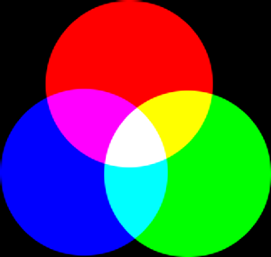
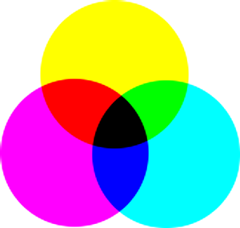
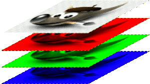
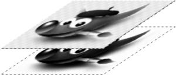

Este capítulo é sobre a obtenção de imagens no GIMP. Ele explica como criar novas imagens, como carregar imagens de arquivos, como digitalizá-las e como fazer capturas de tela.
Mas primeiro nos queremos apresentar a você à estrutura geral das imagens noGIMP.
É tentador pensar em uma imagem como algo que corresponde a uma janela de exibição única, ou um único arquivo, como um arquivo JPEG. Na realidade, no entanto, um imagem no GIMP é uma estrutura complicada, que contém uma pilha de camadas e mais vários outros tipos de objetos: a máscara de seleção, um conjunto de canais, um conjunto de caminhos, um “histórico de desfazer”, etc. Nesta seção vamos dar uma olhada detalhada dos componentes de uma imagem do GIMP, e as coisas que você pode fazer com eles.
A propriedade mais básica de uma imagem é o seu modo. Há três modos possíveis: RGB, Tons de cinza, e indexado. RGB é a sigla em inglês para as iniciais das cores "Vermelho", "Verde" e "Azul", e indica que cada ponto da imagem é representado por um nível de “vermelho”, um nível de “verde”, e um nível de“azul”, representando uma imagem colorida. Cada canal de cor tem 256 níveis de intensidade possíveis. Mais detalhes em Modelos de cores
Em uma imagem em tons de cinza, cada ponto é representado por um valor de brilho, variando de 0 (preto) a 255 (branco), com valores intermediários que representam diferentes níveis de cinza.
Figura 5.1. Componentes dos Modelos de Cores RGB e CMY

O modelo de cor RGB, a mistura das cores vermelho, verde e azul dá branco, que é o que acontece na tela do computador.

No modelo de cor CMY (K), misturar Ciano, Magenta e Amarelo dá preto, que é o que acontece quando você imprime em um papel branco. A impressora vai, na verdade, usar o cartucho preto por razões econômicas e por que isso torna as cores melhores.
Conceitualmente, a diferença entre auma imagem em tons de cinza e uma imagem RGB é o número de “canais de cores”: uma imagem em tons de cinza tem um, uma imagem RGB tem três. Uma imagem RGB pode ser imaginada como três imagens em tons de cinzasobrepostas, uma que origina a cor vermelha, outra a verde e uma a cor azul.
Na verdade, tanto imagens RGB como em tons de cinza podem ter um canal de cor adicional chamado canal alfa, que representa opacidade. Quando o valor de alfa em um determinado local numa dada camada é igual a zero, a camada é completamente transparente (você pode ver através dela), e a cor na localização é determinada por aquilo que se encontra por baixo. Quando o valor de alfa é máximo (255), a camada é opaca (não se pode ver através dele), e a cor é determinada pela cor da camada. Os valores intermédios de alfa correspondem a diferentes graus de transparência/opacidade: a cor no local é uma mistura proporcional da cor da camada e da cor da parte de baixo.
Figura 5.2. Exemplo de uma imagem nos modos RGB e Tons de Cinza

Uma imagem no modo RGB, com os canais correspondentes ao vermelho, verde e azul.

Uma imagem no modo Tons de cinza, com o canal correspondente à luminosidade.
In GIMP, in every color channel, including the alpha channel, possible values have a range depending on the image precision: 0 to 255 for a color depth of 8 bits. GIMP can load 16 and 32 bits images, and this range can be much larger.
Figura 5.3. Exemplo de uma imagem com canal Alfa

Canal vermelho

Canal verde

Canal azul

O canal alfa mostra a área da imagem que é transparente.

Uma imagem colorida no modo RGB com um canal alfa.
The third type, indexed images, is a bit more complicated to understand. In an indexed image, only a limited set of discrete colors are used, usually 256 or less (so, this indexed mode can be applied only to images with 8 bits precision). These colors form the “colormap” of the image, and each point in the image is assigned a color from the colormap. Indexed images have the advantage that they can be represented inside a computer in a way which consumes relatively little memory. As time goes on, they are used less and less, but they are still important enough to be worth supporting in GIMP. (Also, there are a few important kinds of image manipulation that are easier to implement with indexed images than with continuous-color RGB images.)
Some very commonly used types of files (including GIF and PNG) produce indexed images when they are opened in GIMP. Many of GIMP's tools don't work very well on indexed images–and many filters don't work at all–because of the limited number of colors available. Because of this, it is usually best to convert an image to RGB mode before working on it. If necessary, you can convert it back to indexed mode when you are ready to save it.
O GIMP torna fácil converter uma imagem de um tipo para outro, usando o comando modo no menu Imagem. Alguns tipos de conversão perdem informação, é claro (RGB para tons de cinza ou indexada, por exemplo). Nesses caso a informação de cor é descartada e não pode ser recuperada convertendo a imagem de volta para RGB (só com “Desfazer”)
![[Nota]](images/note.png)
|
Nota |
|---|---|
|
Se você está tentando usar um filtro em uma imagem, e ele aparece desligado (acinzentado) nos menus, geralmente a causa é que a imagem (ou, mais especificamente, a camada) emque você está trabalhando é do tipo errado. Muitos filtros não podem ser usados em imagens indexadas. Alguns podem ser usadas somente em imagens RGB, ou apenas em tons de cinza. Alguns também exigem a presença ou a ausência de um canal alfa. Normalmente, a forma de poder usar o filtro é converter a imagem para um tipo diferente, mais comumente RGB. |